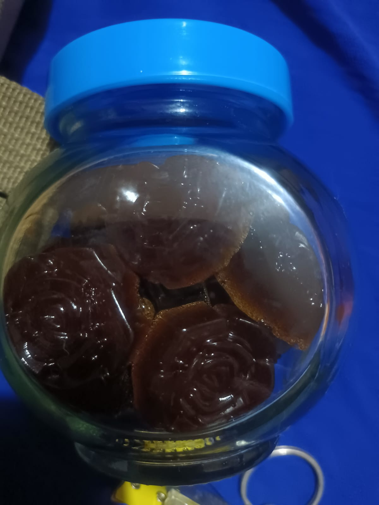
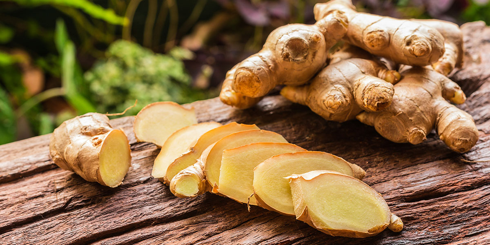
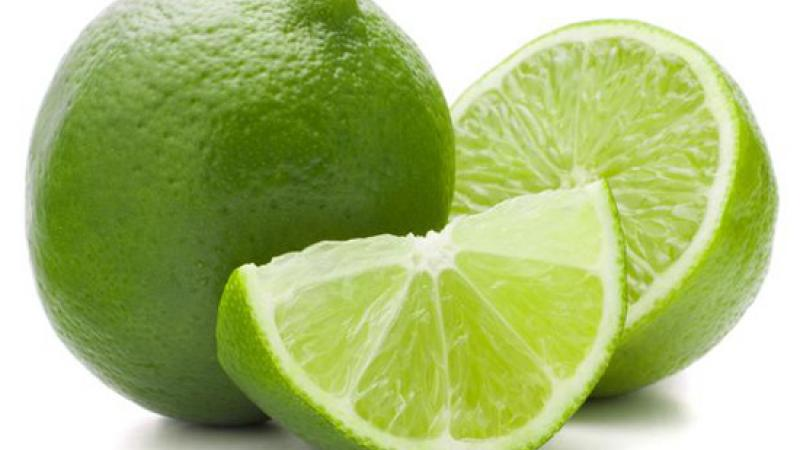
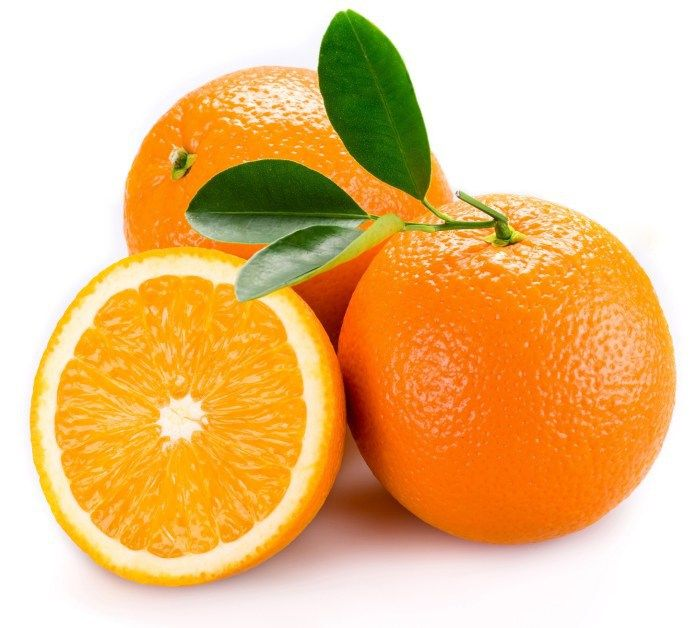
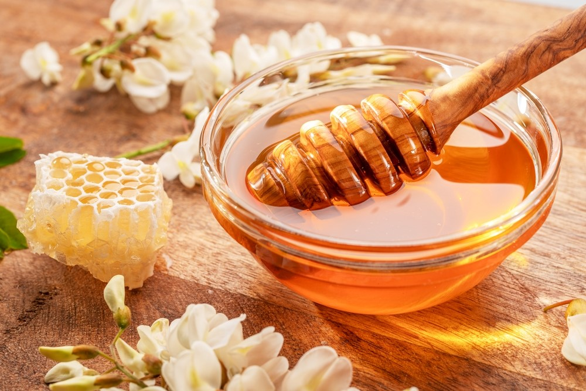
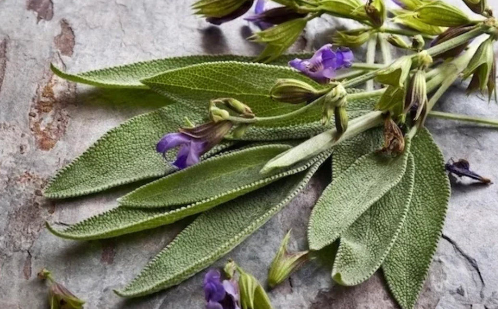
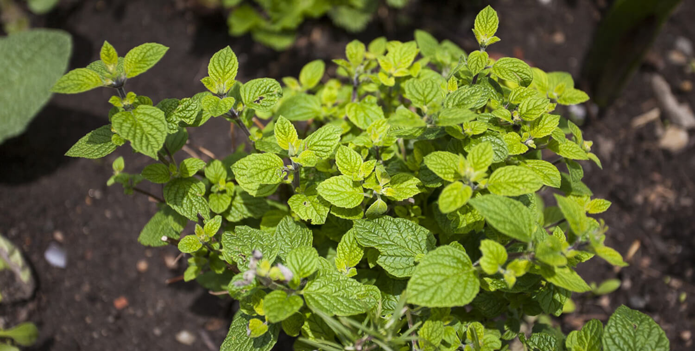

🍬 Gomitas Antigripales Naturales

¿Qué son las gomitas antigripales?
Son productos comestibles de consistencia gelatinosa elaborados con extractos naturales de eucalipto, salvia, manzanilla, borraja, muña, wira wira, cáscara de naranja, miel de abeja y kion. Sus compuestos bioactivos poseen efectos descongestionantes, expectorantes, antioxidantes y antiinflamatorios. Estas gomitas están diseñadas como un suplemento natural para aliviar síntomas del resfrío común y mejorar el bienestar respiratorio.
🌿 Ingredientes Naturales Clave
 Eucalipto
EucaliptoDescongestionante
Kion
Antiinflamatorio
Antiinflamatorio
Limón
Vitamina C
Vitamina C
Naranja
Antioxidante
Antioxidante
Miel
Antibacteriana
Antibacteriana
 Manzanilla
ManzanillaCalmante
Salvia
Antimicrobiana
Antimicrobiana
Muña
Digestiva
Digestiva
🧪 Proceso de Elaboración
1. Infusión de plantas
- Selección y pesado de plantas medicinales
- Desinfección con solución de lejía (0.1%)
- Hervido con kion a 98–100°C por 20 minutos
- Reposo y enfriado
2. Preparación del jarabe cítrico
- Desinfección de limón y naranja
- Extracción de zumo y mezclado con la infusión
- Caramelización de azúcar con miel
- Mezclado final con la infusión
3. Preparación de las gomitas
- Disolver grenetina en infusión fría
- Agregar jarabe caliente y batir
- Moldeo en recipientes de silicona
- Reposo por 15 minutos
4. Envasado
- Limpieza de frascos con lejía (0.4%)
- Choque térmico con agua hirviendo
- Secado y llenado inmediato
- Refrigeración final
 Paico
Paico